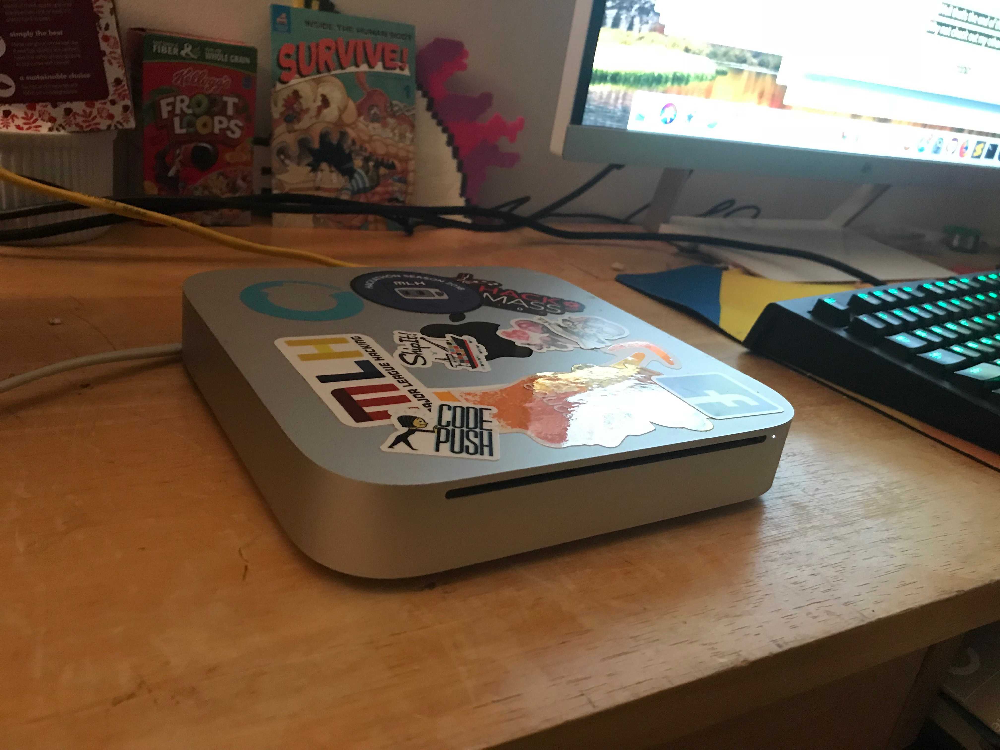

Building A Hackintosh

11/25/17
How hard could it be?
I mentioned in my last blog post that I wanted to build IOS apps using unity, but I didn't have a Mac to do so. I'm currently on thanksgiving break from school so I figured why not? For those of you who don't know, a Hackintosh is when you take a computer that wasn't manufactured by apple and runs OS X. As of writing this the most recent version of OS X is High Sierra. How hard could it be? I mean I've changed operating systems before. Well, it was hard, but fun! I started where all good projects start...google. I first came across guides such as ones telling me to use tools from https://www.tonymacx86.com/
These looked like simple enough. They had simple Gui's, lifehacker promoted them, but they didn't work for me.
Process
This isn't a guide for how to make a Hackintosh, but I'll give a summary of the process.
First you prep your bios:
1. To access BIOS/UEFI Setup, press and hold Delete on a USB Keyboard while the system is booting up
2. Load Optimized Defaults
3. If your CPU supports VT-d, disable it
4. If your system has CFG-Lock, disable it
5. If your system has Secure Boot Mode, disable it
6. Set OS Type to Other OS
7. If your system has IO SerialPort, disable it
8. Set XHCI Handoff to Enabled
9. If you have a 6 series or x58 system with AWARD BIOS, disable USB 3.0
10. Save and exit.
Once that was complete, I created a bootable usb drive with High Sierra on it using Tony's Unibeast. It didn't work. I tired a few more times, and then went to bed . After trying and trying I found multiple reddit posts saying not to use unibeast, and to make my own bootable drive using Clover Configurator. I had to look up specifications of my hardware in order to make changes to the boot files. This worked! sort of. I had to tweak way more settings. I spent hours reading error messages, and reading forum posts to see if anybody had my same error. I even tried installing with GPU. Finally, after seemingly thousands of reboots, edits, and failures, I booted into OS X to install it. The install went smooth and I soon booted into High Sierra, but I still had 2 problems remaining. The first problem was that the resolution was stuck super low. This was fixed by a change to the boot file in Clover Configurator, and a driver install. The other issue was I had no wifi. When my PC ran windows my wifi adapter worked, but it was not supported in OS X, so I shared the internet from my Mac Mini over ethernet, a nice feature. After intstalling the remaining drivers everything worked! I now have a fully functional Mac on with my old hardware!
Was it worth it?
Well it was really fun, and it felt amazing when I finally saw the High Sierra background. I will write an update if anything changes, but for now things are great. I have started to enjoy OS X more and more, so I would say it's worth it.
Can you use a $200 Mac for Developing?

11/25/17
Background
I had been building regular desktop video games for a while but decided to set things up, and build an IOS game. Throwback to whenever it was last year, I built a fun little platformer game that was mobile friendly. I tested it on android and it worked great. It was time to port it to IOS...but you need a Mac to build to IOS. So I started to look into my options:
1. Build a Hackintosh (what my next post is about)
2. Figure out how to get OS X working in a virtual machine
3. Buy a Mac :(
I decided option 3 might be the best. I decided on a budget of $200, and started looking. I ended up finding a used 2010 Mac mini with some nvidia gpu, an Intel Core Duo, and 2gb of ram. I was very excited since it was my first Apple computer that wasn't a phone. For something that came out 7 years ago I was shocked for how good of condition it was in, but I guess it had just sat on somebodies desk. Also, I guess not everybody defaces their devices with stickers like I do. I finally got home and plugged it in...success! it booted...into some old old version of Mac OS that coudln't be directly updated into Sierra since it was so old. After that was solved, and Sierra was installed I was in business.
Slow Business
Things were slow. The 2gb of ram barely kept up. I could barely use it. Time to break out the secret weapon. I replaced the 2gb with 4gb of ram from an old laptop. Now we were cooking. I could have multiple applications open, watch videos, have multiple chrome tabs (woah), anything but use unity. Which was the whole point, but that isn't the point of this post. The point of this post is to see if you can actually develop ANYTHING.
Conclusion
While I wasn't able to work with Unity or Xcode, preformance was great for other applications like Sublime Text. In conclusion, if you are somebody who wants a small form factor PC, the OS X experience, and you only runs low resource applications, this is a perfect option for you.